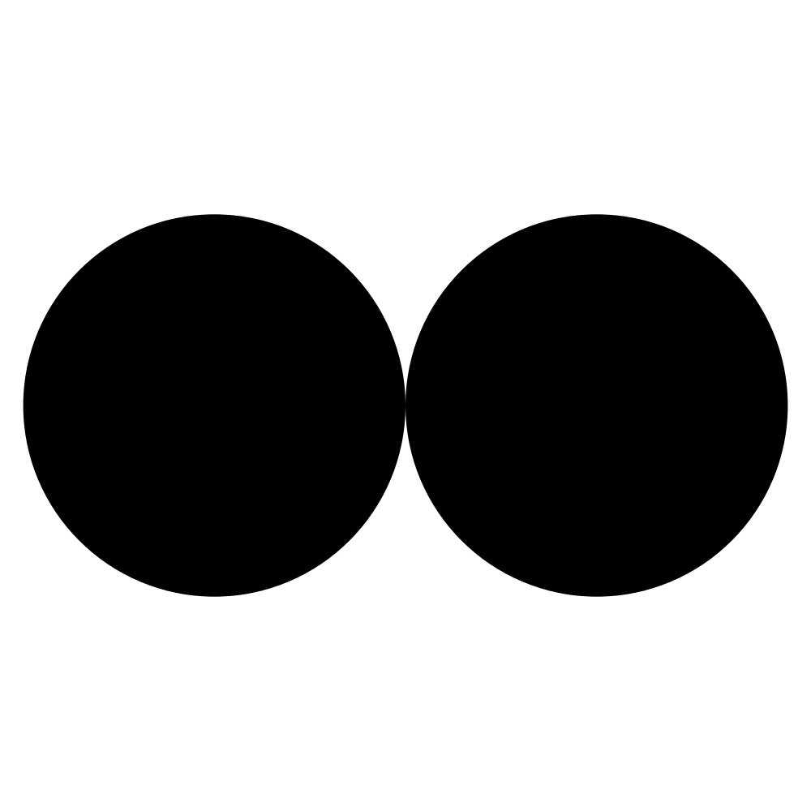
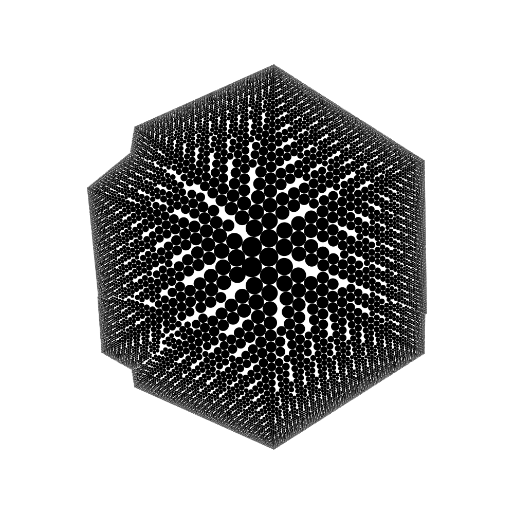
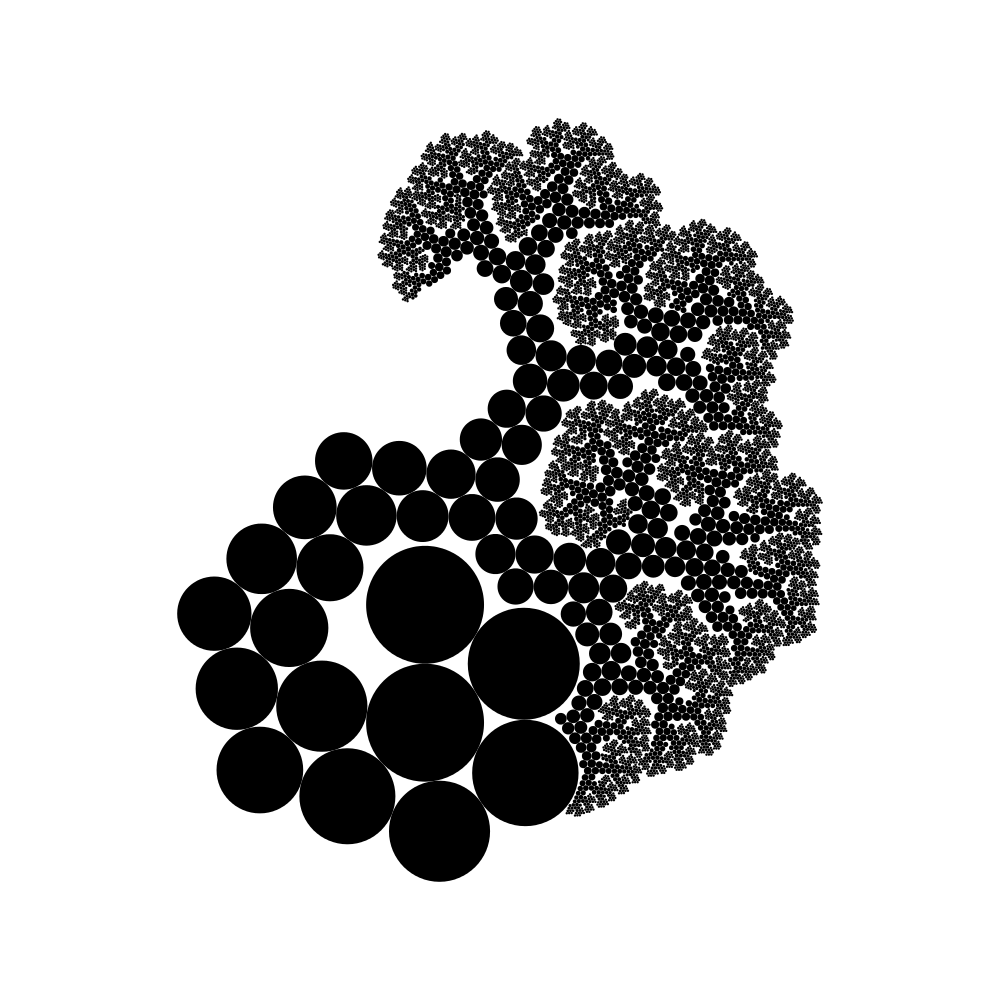
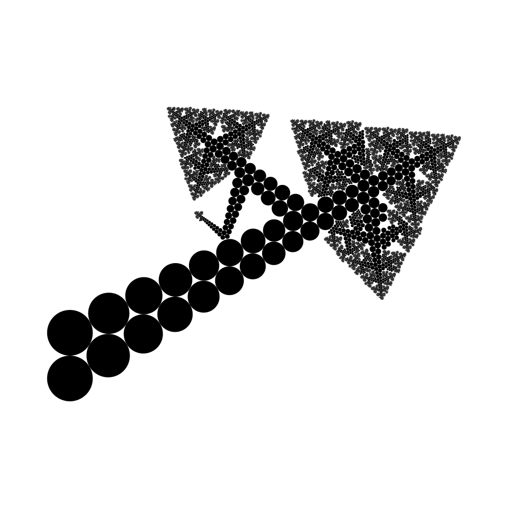

Folds and Enveloppes
The previous tutorials, here, here and here, introduced the 2x2 circle packing algorithm, and described different methods to render the resulting circle patterns.
The present tutorial will go back to the fundamental of the algorithm, to change its result in radical ways.
Plugs
When we first encountered the 2x2 circle packing algorithm, we described how the 2x2 rule can be iterated to produce interesting circle patterns: from a couple of parent circles, and from a radius and a side, we computed a new circle tangent to its parents. We first studied how dealing with the radius parameter can influence the shape of the pattern, but we neglected to study the second one. So let's now discuss about sides.
If we consider the initial configuration of a 2x2 pattern, we have the following figure:

From those initial 2 circles, and by choosing a radius, we can compute two circles, depending on which side we want them, as follows:
Another way to look at this 2x2 rule is to consider that from a triplet (c1,c2,side) and a radius, we can compute a new circle, its position determined by the triplet, and its size determined by the radius. In a way, the triplet determines where to attach the new circle, so we will call it a plug.
At the initial stage of the process, we have 2 different plugs, (c1, c2,Left) and (c1,c2, Right), corresponding to the two ways a circle can be plugged to the initial circle couple.
When we use a first plug to compute a new circle, another still remains to be used, while 4 new ones are created (one for each parent and each side). On those 4, only 2 will be able to produce 2 new circles, the other 2 being already filled by the parents. So at the end of the first iteration, we have one new circle, and 3 plugs to be used. If we iterate the process again, we get a new circle and 2 more plugs, so we are left with 4 plugs. Thus, by iterating the 2x2 rule, we are producing new circles, but also accumulating plugs to continue the process.
We can formalize the plug accumulation by using a stack: new computed plugs are stacked, while plugs used to compute new circles are unstacked. And we can study how the way to stack and unstack those plugs influences the shape of the resulting patterns.
FIFO LIFO
The first way to consider the plug stack is as a FIFO ( First In First Out) stack: we use the oldest plugs first to compute the new circles. This is the way circle patterns have been computed, up to now. As a reminder we got:

Let's know consider the opposite type of stack: the LIFO (Last In First Out). In this configuration, we use the newest plugs to compute the new circles. If we do so, we get:

Nice ! We get a nice enveloping pattern, quite different from the patterns we have generated up to now.
LIFOLD
Let's study now a bit more carefully the LIFO process of unstacking new plugs. At each iteration, we unstack the newest plug to compute the new circle. However, we have 2 plugs to consider as newest, since most of the time (when no collision), we get 2 plugs for each new circle. So again: which one should we choose ?
To properly answer the question, we first need to find a way to order those 2 plugs. To do so, we can define the age of a plug by the sum of the ages of its 2 circles, and the age of a circle as the rank at which the circle has been computed.
By using this criteria, we can now define how 2 new plugs resulting from the computation of a new circle must be added into to plug stack.
In the previous example, we stack them in their age order (old one before new one). If we reverse this order, we got:

We are indeed alternating the plugs to build a pattern that folds upon itself, and creates tree-like structure with recursive branching system !
Tubular fields
Let's recap: we have seen how we can use the plug concept to analyze how we grow new circles with the 2x2 rule to create different types of circle patterns. We have seen that we can get an enveloping pattern by (un)stacking plugs through a LIFO, and with a trick, we can even change the result to produce tree-like structures.
But we must notice now that the last trick actually opens a new kind of algorithms. By creating intermediate recognizable structures (the 2 - circle lines), this algorithm is creating patterns with a supplementary organization level, that ultimately will translate in even more interesting circle patterns.
To illustrate how, I will show in the next tutorial how a 2 - circle line shape is actually only defined by the radius ratio used in the folding process, and how this parameter can be used and changed to define different patterns at different scales inside the pattern.
Stay tuned. A bientot.